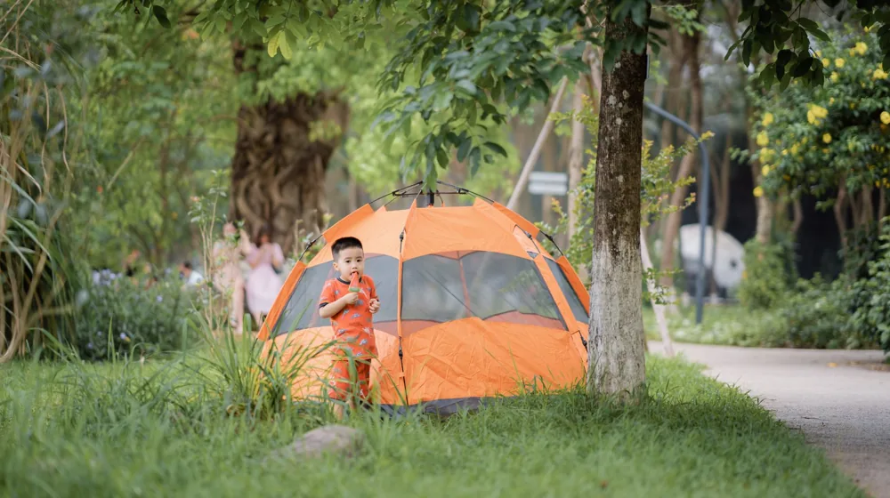

성공적인 캠핑장 예약의 모든 것: 명당 잡는 꿀팁 5가지
사진: David Geib / Pexels (무료 이미지, 출처 표기)
캠핑의 로망, 인기 캠핑장 명당 이렇게 예약하세요: 성공 전략

캠핑의 계절이 돌아오면 많은 분이 캠핑장 예약을 시도하지만, 인기 있는 명당 사이트는 오픈과 동시에 마감되는 경우가 많습니다. 몇 번의 실패로 캠핑 계획을 포기하려 하셨나요? 이 글에서는 국내 캠핑장 명당을 성공적으로 예약하는 실질적인 꿀팁부터 놓치기 쉬운 필수 정보까지, 여러분의 캠핑 로망을 현실로 만들어 줄 모든 것을 알려드립니다.
성공적인 예약을 위해서는 몇 가지 전략이 필요합니다. 먼저, 예약 오픈일과 시간을 정확히 파악하는 것이 중요합니다. 많은 캠핑장이 매월 특정 일자에 다음 달 예약을 오픈하며, 이때 빠르게 접속하여 선점해야 합니다. 알림 서비스를 적극적으로 활용하여 놓치지 않도록 설정하세요. 또한, 하나의 플랫폼에만 의존하기보다는 여러 예약 사이트를 동시에 활용하는 것이 유리합니다.
예약에 앞서 사전 준비를 철저히 하는 것도 중요합니다. 미리 회원가입을 해두고, 결제 정보를 등록해 두면 예약 당일 시간을 단축할 수 있습니다. 인기 캠핑장은 1분 1초가 소중하기 때문입니다. 또한, 원하는 사이트 번호를 몇 개 미리 정해두고, 차선책까지 고려해 두면 더욱 빠르게 예약을 진행할 수 있습니다.
예약 전 반드시 확인해야 할 체크리스트
캠핑장 예약 전에는 단순히 '예약 가능' 여부만 확인할 것이 아니라, 자신의 캠핑 스타일과 맞는 곳인지 꼼꼼히 따져봐야 합니다. 다음 체크리스트를 참고하여 즐거운 캠핑을 계획하세요.
특히 전기 사용 가능 여부는 냉장고나 전열 기구 사용에 필수적이므로 반드시 확인해야 합니다. 또한, 일부 캠핑장은 온수 사용이 제한되거나 샤워실 운영 시간이 정해져 있을 수 있으니 미리 알아보는 것이 좋습니다.
놓치지 마세요! 취소표 잡는 실전 꿀팁
원하는 날짜에 예약이 마감되었다고 해서 바로 포기할 필요는 없습니다. 예약 취소로 인해 발생하는 '취소표'는 또 다른 기회가 될 수 있습니다. 실제로 많은 캠퍼가 취소표를 활용해 명당을 잡곤 합니다.
취소표를 잡는 가장 기본적인 방법은 예약 사이트를 수시로 확인하는 것입니다. 특히 예약 취소 수수료가 발생하는 시점이나, 주말 및 휴일 전날 저녁 시간대에 취소표가 풀리는 경우가 많습니다. 특정 시간에 취소표가 일괄적으로 풀리는 캠핑장도 있으니, 해당 캠핑장의 정책을 미리 알아보는 것이 좋습니다.
또한, 일부 예약 플랫폼에서는 '대기 예약' 또는 '취소 알림' 서비스를 제공하기도 합니다. 이 기능을 활용하면 직접 계속 새로고침을 하지 않아도 취소표가 발생했을 때 알림을 받아볼 수 있습니다. 캠핑 관련 온라인 커뮤니티나 카페에서도 취소표 정보를 공유하는 경우가 있으니, 적극적으로 활용해 보세요. 융통성을 가지고 원하는 날짜의 1~2일 전후로도 살펴보면 더욱 많은 기회를 얻을 수 있습니다.
주요 캠핑장 예약 플랫폼 비교와 활용법
국내 캠핑장 예약은 주로 전문 플랫폼을 통해 이루어집니다. 대표적인 플랫폼으로는 '땡큐캠핑', '캠핏', '캠핑톡' 등이 있습니다. 각 플랫폼은 고유의 특징과 강점을 가지고 있으니, 자신의 스타일에 맞는 곳을 선택하거나 여러 곳을 병행하여 사용하는 것이 효과적입니다.
- 땡큐캠핑: 가장 많은 캠핑장 정보를 보유하고 있으며, 다양한 필터 기능을 통해 원하는 조건을 빠르게 검색할 수 있습니다. 실시간 예약 현황을 한눈에 볼 수 있는 UI가 강점입니다.
- 캠핏: 깔끔한 인터페이스와 사용자 친화적인 기능으로 인기가 많습니다. 주로 인기 캠핑장을 중심으로 예약 시스템을 제공하며, 특정 캠핑장의 경우 단독으로 예약 대행을 하기도 합니다.
- 캠핑톡: 캠핑장 예약뿐 아니라 캠핑 커뮤니티 기능이 활성화되어 있어, 다른 캠퍼들과 정보 교환이 용이합니다. 공동구매나 이벤트 정보도 얻을 수 있습니다.
이 외에도 네이버 예약, 야놀자 등 종합 숙박 플랫폼에서도 일부 캠핑장 예약이 가능합니다. 2024년 6월 기준, 각 플랫폼의 기능과 연동된 캠핑장은 상이할 수 있으므로, 예약 전 해당 캠핑장의 공식 홈페이지나 플랫폼에서 다시 한번 확인하시길 권장합니다.
초보 캠퍼를 위한 캠핑장 이용 가이드
어렵게 예약한 캠핑장에서 즐거운 시간을 보내기 위해서는 몇 가지 기본 수칙을 지키는 것이 좋습니다. 특히 캠핑이 처음이라면 다음 사항들을 미리 숙지하여 더욱 안전하고 쾌적한 캠핑을 경험해 보세요.
사이트 선택 시에는 그늘이 충분한지, 편의시설(화장실, 개수대)과의 거리는 적당한지, 주변에 다른 캠퍼들이 너무 밀집되어 있지는 않은지 등을 고려해야 합니다. 경사가 심한 곳은 피하는 것이 좋고, 밤에 어둡지 않도록 가로등이나 주변 밝기를 미리 확인하면 편리합니다.
캠핑장 이용 에티켓은 모두의 즐거움을 위해 필수적입니다. 과도한 소음은 다른 캠퍼에게 큰 불편을 줄 수 있으므로, 밤 10시 이후에는 소리를 낮추는 '매너 타임'을 지켜주세요. 쓰레기는 종류별로 분리하여 지정된 장소에 버리고, 사용한 공용 시설은 깨끗하게 정리하는 습관이 중요합니다. 화로대 사용 시에는 불똥이 튀지 않도록 주의하고, 불씨를 완전히 진화한 후 처리해야 화재를 예방할 수 있습니다.
성공적인 캠핑장 예약, 이것만은 주의하세요
즐거운 캠핑을 위한 마지막 단계는 예약 관련 주의사항을 숙지하는 것입니다. 자칫 잘못하면 예약이 취소되거나 불이익을 당할 수 있으니 꼼꼼하게 확인해야 합니다.
캠핑장 규정 미숙지는 가장 흔한 실수입니다. 예약 전 인원 제한, 차량 대수 제한, 반려동물 동반 가능 여부, 화로대 사용 규정 등을 반드시 확인하세요. 규정을 어길 시 입장이 거부되거나 퇴실 조치될 수 있습니다. 또한, 예약 변경 및 취소 수수료 규정도 미리 알아두는 것이 좋습니다. 갑작스러운 일정 변경 시 금전적 손실을 줄일 수 있습니다.
마지막으로, 비공식적인 경로를 통한 예약 거래는 지양해야 합니다. 중고 거래 사이트나 개인 간의 양도 거래는 사기의 위험이 있으며, 캠핑장 측에서 예약 취소 또는 입장을 거부할 수 있습니다. 반드시 공식 예약 플랫폼을 통해 예약하고, 변경 및 취소도 정식 절차를 따르는 것이 안전합니다.
🔗 이 글도 함께 보면 좋아요: 가수 손호영 과거 사건 정리: 진실과 그 후의 행보
관련 추천 상품
이 포스팅은 쿠팡 파트너스 활동의 일환으로, 이에 따른 일정액의 수수료를 제공받습니다.